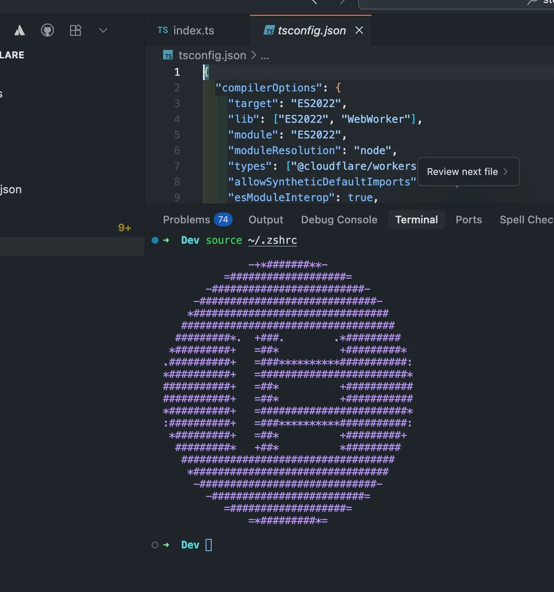

How Cursor removed codebase bottlenecks from our team
Originally posted on LinkedIn, July 24, 2025.
A few months after we adopted Cursor across the team, I noticed something had changed: nobody was waiting for answers anymore.
Developers ask questions about the code and get immediate answers from the chat. Why is it built this way? Where is the logic managed? Which tests should I write? In the past, every question like this went straight to the team's Tech lead, the most senior engineer, or whoever wrote the module.
Now developers ask the chat, and in the vast majority of cases, it can answer and explain. That changes everything.
Cursor does more than shorten processes. It removes dependencies. Developers can move freely through the codebase and beyond it. They ask without apologizing, understand without help, and progress at their own pace.
I've often gone into neighboring repositories, such as DevOps repos or shared code libraries, and felt comfortable writing and changing code because of Cursor.
The senior engineers also benefit. They no longer need to answer every question, so they get their time back. That time is valuable, and it translates into a development pace higher than we've ever had before.
The effect compounds. The person asking learns. The senior engineer gets time back. The whole team moves faster. PRs land sooner, and tasks don't just get finished. They get knocked out.
Product and design feel it too. Expectations rise, feedback cycles get shorter, and some of the pressure shifts to them.
It's hard to put a number on this, but the change is clear. A team that adopts Cursor deeply works differently.
I also used AI, of course, to create the Elementor logo script displayed in the CLI.
